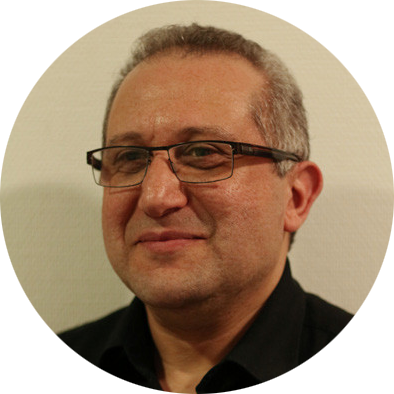
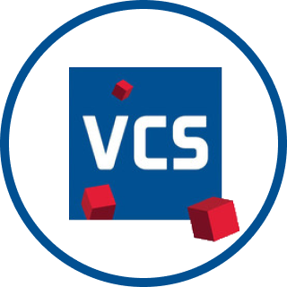

Directeur, PASS-TECH
Nader Boutros est ingénieur architecte, enseignant à l'Ecole Nationale Supérieure d'Architecture de Paris Val de Seine et chercheur au laboratoire de recherche EVCAU depuis 25 ans. Il a contribué à la mise en place de l'enseignement du BIM dans diverses écoles d'ingénieurs et dans les écoles d'architecture ainsi que la mise en place de collaborations entre elles. II a tenu le rôle du speaker lors de cette première édition. Il a annoncé les différents intervenants et animés les questions-réponses entre le public et les conférenciers.
 Aline IsozLA TRANSITION DIGITALE ET LES INNOVATIONS
Aline IsozLA TRANSITION DIGITALE ET LES INNOVATIONS
Experte suisse en transformation digitale
Aline Isoz est une experte suisse en transformation digitale. Elle accompagne les entreprises dans la coordination et la gestion de projets stratégiques liés à la numérisation, depuis la mise en place de la gouvernance et des modèles d'affaires, jusqu'au développement des compétences et l'implémentation des systèmes d'information. Elle est : fondatrice et directrice de Blackswan, vice-présidente du Conseil d'administration de Globaz SA, membre du Conseil d'administration des Services Industriels Genevois et de VO Energies. Aline Isoz a ouvert la journée avec une conférence sur « la transition digitale et les innovations ».
Retrouvez plus d'informations sur le contenu de cette conférence dans notre article.
BIM manager du prestigieux cabinet d'architecte Renzo Piano Building Workshop
Daniel Hurtubise est BIM manager du prestigieux cabinet d'architecte Renzo Piano Building Workshop et cofondateur de la société Data-shapes. Il a présenté une conférence sur « le nouveau rôle de l’architecte » et montré comment les nouvelles méthodes et les nouvelles technologies ( intelligence artificielle, generative design, automatisation, visualisation ... ) modifiaient le métier de l’architecte.
Retrouvez plus d'informations sur le contenu de cette conférence dans notre article.
 Sylvain RISSMANAGEMENT DU CHANGEMENT DANS UN PROJET D'INFRASTRUCTURE
Sylvain RISSMANAGEMENT DU CHANGEMENT DANS UN PROJET D'INFRASTRUCTURE
Directeur numérique et BIM chez BG Ingénieurs Conseils
Sylvain Riss est directeur numérique et BIM pour le groupe BG Ingénieurs Conseils, auparavant il travaillait au sein de l’entreprise Assystem où il portait la direction du programme BIM pour la Société du Grand Paris. Il est docteur en sciences de l’éducation et spécialisé dans les questions d’ingénierie pédagogique et de formation. Il a présenté une conférence sur le « management du changement dans un projet d’infrastructure complexe ». Il a présenté la stratégie, les processus et la technologie mis en place sur le projet du Grand Paris Express pour faciliter l’intégration du BIM et accompagner le changement dans les organisations.
Retrouvez plus d'informations sur le contenu de cette conférence dans notre article.
Directeur de l'information du territoire à la République et au Canton de Genève / Géomètre cantonal
Laurent Niggeler est directeur de l'information du territoire à la République et au Canton de Genève, il est également géomètre cantonal. Il dirige le service de la mensuration officielle, chargé de collecter et de mettre les données géo référencées du territoire à disposition des usagers. Il a été représenté par Mr Oehrli Directeur du service de géomatique et Mme Vincendon BIM manager à l’état de Genève qui ont donné une conférence sur « les convergences entre le BIM et les Systèmes d’Informations Géographiques », ils ont également présenté leur plan d’action pour déployer la méthode BIM au sein de l’Etat de Genève.
Retrouvez plus d'informations sur le contenu de cette conférence dans notre article.
Cofondateur et président de la Smart Building Alliance for Smart Cities (SBA)
Chargé de la commission BIM de la SBA / CEO de Data Soluce
Emmanuel François est le cofondateur et président de la Smart Building Alliance for Smart Cities (SBA). Avec plus de 400 membres, la SBA accompagne, dans une approche très transversale, l'ensemble des acteurs impliqués dans Smart Building et Smart City dans leur transformation numérique combinée à leur transition environnementale. Nicolas Régnier est en charge de la commission BIM de la SBA, il est également le CEO de Data Soluce. C'est un véritable pionnier de l’exploitation des données structurées générées par les processus BIM permettant une exploitation optimale des assets. Emmanuel François et Nicolas Régnier ont donné une conférence sur « les smart building et le BIM pour le Facility Management ». Ils ont également présenté les travaux de la SBA concernant les standards R2S (Ready2Services), R2S-4 Grids et BIM-4Value et les prérequis pour le Smart Building et le Smart Grid.
Retrouvez plus d'informations sur le contenu de cette conférence dans notre article.
 Ahmed Ryad SBARTAÏLE CIM : CITY INFORMATION MODELING (SMART CITY)
Ahmed Ryad SBARTAÏLE CIM : CITY INFORMATION MODELING (SMART CITY)
PDG et fondateur de C-INNOV (Conseil Innovation Numérique)
Ahmed Ryad Sbartai est PDG et fondateur de C-INNOV (Conseil Innovation Numérique) à Montréal, une entreprise innovante, créative et qui prône le leadership. Ahmed Ryad Sbartaî est architecte, thermicien/énergéticien expert en efficacité énergétique et en rénovation, expert et leader en méthodologie et technologie BIM, CIM et VDC. Il a présenté une conférence sur « les Smart City et le City Information Modeling (CIM) ».
Retrouvez plus d'informations sur le contenu de cette conférence dans notre article.
 Amstein + Walthert LA DIGITALISATION, UN VECTEUR DE VALORISATION DE VOTRE PATRIMOINE
Amstein + Walthert LA DIGITALISATION, UN VECTEUR DE VALORISATION DE VOTRE PATRIMOINE
Conseil, ingénierie, Minergie, concepts de protection du climat et écologie dans la construction
 Rodrigo MORALES
Rodrigo MORALES
Responsable BIM et SYNTHESE technique AW
Directeur Grand Projet AW
Rodrigo Morales et Romain Du Sordet travaillent au sein du bureau d’ingénieurs Amstein & Walthert à Genève. Ils ont présenté ensemble une conférence sur « la digitalisation, un vecteur de valorisation de votre patrimoine ». Ils ont également pu faire des retours d’expériences sur différents projets : l’hôpital de l’île ou hôpital universitaire de Berne, un projet de mobilité coopérative à Zurich, le tunnel du Saint Godard et le projet Quartet à Genève.
Retrouvez plus d'informations sur le contenu de cette conférence dans notre article.
Conseil en gestion de process BIM
Architecte, CEO de CADatWORK, Autodesk Expert Elite et auteur du livre « Les familles de Revit pour le BIM »
Vincent Bleyenheuft dirige un cabinet d'architecte, il est associé de CADatWork, une société spécialisée dans le conseil autour des processus BIM et au sein de laquelle il est responsable du pôle BIM Management. Expert BIM et Revit reconnu en France et à international, il a développé depuis toujours un intérêt particulier pour les objets qui l'a amené en 2017 à publier le livre "Les familles de Revit pour le BIM", édité par Eyrolles et qui fait référence en matière d'ouvrage sur le sujet, en France. Il est venu partager son expertise sur le sujet dans une conférence intitulée « l’enjeu des objets dans les processus BIM ».
Retrouvez plus d'informations sur le contenu de cette conférence dans notre article.
 VPBIM (Valode & Pistre)LA GESTION BIM ET CIM DES PROJETS A L'ECHELLE URBAINE EN INTERFACE AVEC LES INFRASTRUCTURES
VPBIM (Valode & Pistre)LA GESTION BIM ET CIM DES PROJETS A L'ECHELLE URBAINE EN INTERFACE AVEC LES INFRASTRUCTURES
Architecture et planification
Dirigeante de l'entreprise VPBIM
Annalisa De Maestri est directrice de la société VPBIM (groupe Valode et Pistre), elle développe l’activité autour du BIM, du Data Management, de la synthèse et s’occupe également des sujets de R&D. Elle est également enseignante en BIM management et management du changement. Elle a publié un livre technique « Premiers pas en BIM » aux éditions Eyrolles. Elle est venue présenter une conférence sur « la gestion BIM, CIM des projets à l’échelle urbaine en interface avec les infrastructures », elle a partagé son expérience sur des projets tels que le Parc des expositions de la Porte de Versailles et la Gare du Nord à Paris et le projet l’Anse du Portier à Monaco.
Retrouvez plus d'informations sur le contenu de cette conférence dans notre article.

VCS, entreprise générale et totale basée en Suisse Romande
BIM Coordinateur chez VCS-SA
Ingénieur BIM Travaux chez VCS-SA
Antoine Bourlet est coordinateur BIM, Loïc Sauvage est ingénieur BIM travaux, ils travaillent tous les deux au sein de l’entreprise Vinci Construction en Suisse (VCS SA). Ils sont venus présenter un retour d’expérience technique intitulé « Coordination et gestion de l’existant en BIM sur le projet Bagage Logistics Center (BLC) à Genève Aéroport ». Ce projet a gagné le prix BIM d’Argent en 2019.
Retrouvez plus d'informations sur le contenu de cette conférence dans notre article.